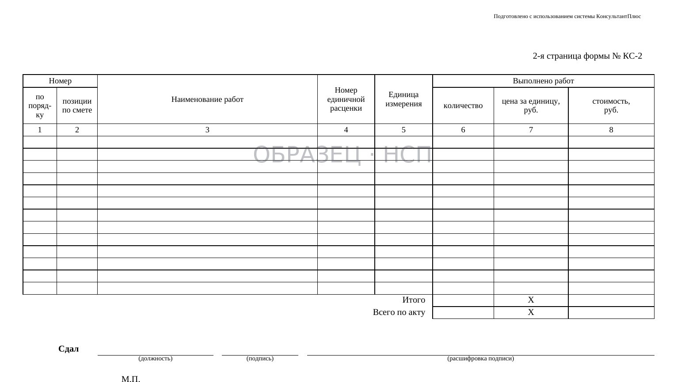
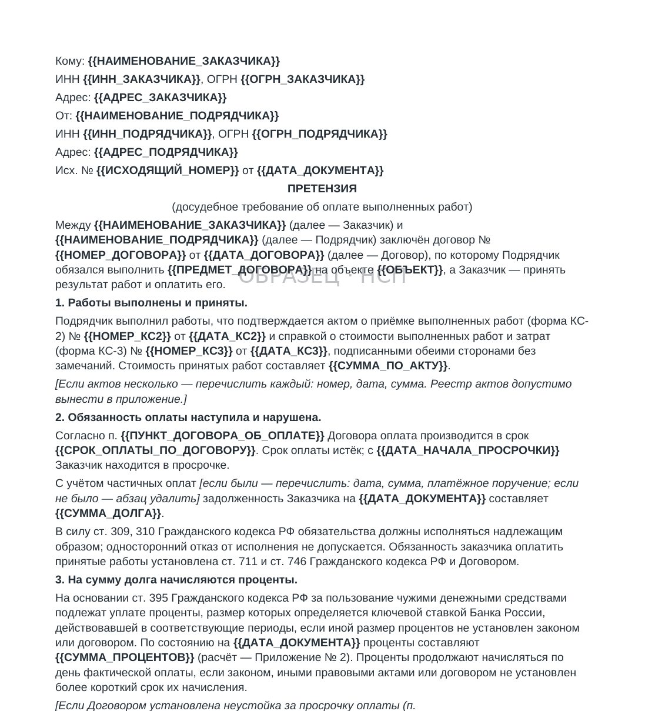
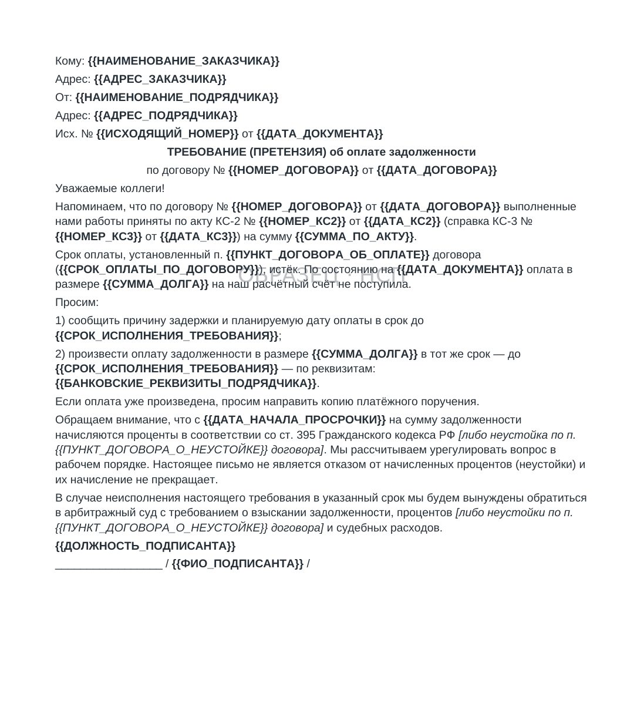

ОПЛАТА / КС-2 ПОДПИСАНА, ДЕНЕГ НЕТ
КС-2 подписана, но оплата задержана: что проверить подрядчику
Вы выполнили работы на 8 млн ₽. КС-2 подписаны заказчиком. КС-3 согласована. Вы звоните: «Когда оплата?» Вам отвечают: «После получения средств от заказчика». И не берут трубку. Месяц. Два. Шесть. Подписанные КС-2 и КС-3 — важное доказательство объёма и приёмки, но для требования оплаты нужно проверить условие о сроке и порядке расчётов, документы и переписку.
Четыре условия договора, влияющие на срок и размер оплаты
Ловушка 1: «Оплата после наступления внешнего события»
Формулировки различаются: «после поступления средств от застройщика», «после согласования объёмов», «после оплаты банком» и другие. Они переносят оплату на событие вне контроля субподрядчика.
Что проверить: формулировку условия, срок, способ подтверждения события и противоречия в договоре. Нельзя заранее считать такое условие универсально работающим оправданием просрочки: вывод зависит от текста договора и обстоятельств.
Ловушка 2: «Оплата после завершения проекта»
Встречаются условия «после ввода объекта», «после получения ЗОС / РНВ» и другие привязки к завершению проекта. Такое условие оценивают вместе с договором, фактической приёмкой и обстоятельствами — оно не становится безусловно действительным только потому, что включено в текст.
Ловушка 3: «Аванс погашается в размере 30% от каждого КС-2»
Расчётный пример. Аванс — 3 млн ₽; принятые работы по КС-2 — 5 млн ₽. При зачёте 30% стоимости принятого объёма в счёт аванса зачёт составляет 1,5 млн ₽, а остаток к оплате до остальных удержаний — 3,5 млн ₽. Если договором дополнительно предусмотрено гарантийное удержание 10% от стоимости этого объёма, к перечислению остаётся 3 млн ₽, а 500 тыс. ₽ учитываются как удержанная часть цены. Базу расчёта и включение НДС проверяют по договору: к сумме с НДС налог повторно не прибавляется. Как проверить, что из акта в платёж вычли ровно столько удержания, сколько позволяет договор, — в разборе об удержании в КС-2 и КС-3.
Ловушка 4: «Взаимозачёт по претензиям»
Генподрядчик выставляет претензию на 2 млн ₽: «Задержка по графику, штраф 0,1% за каждый день». Вы спорите. Он говорит: «Ок, спорим. А пока КС-2 не оплачиваем — взаимозачёт». Вы не получаете деньги. Претензия не доказана. Но деньги заморожены.
4 ошибки, которые совершают субподрядчики

- «Подожду ещё месяц» — промедление усложняет сбор доказательств и контроль сроков. Сразу зафиксируйте документы, дату просрочки и договорённости.
- «Позвоню, договорюсь» — устные обещания и согласования не меняют договорный срок. Любую договорённость о переносе срока, рассрочке, зачёте или ином изменении расчётов доводите до юридически значимого документа: дополнительного соглашения либо нового договора.
- «Судебный порядок требует подготовки» — до подачи иска проверьте подсудность, соблюдение претензионного порядка, расчёт требований и государственную пошлину по действующей редакции НК РФ. Срок рассмотрения и расходы зависят от обстоятельств дела.
- «Претензию не направляю — сразу в суд» — по денежным требованиям из договора обычно соблюдают досудебный порядок: если законом или договором не установлен иной срок, иск подают после 30 календарных дней со дня направления претензии.
Алгоритм взыскания по КС-2


- Проверьте договор ДО первого КС. Нет ли условия «оплата после получения средств от заказчика»? Нет ли привязки к общему акту приёмки? Какой срок оплаты после подписания КС-2? Зафиксируйте срок и событие, которые установлены вашим договором. Сам комплект тоже проверяется до передачи, а не после возврата — проверка КС-2 перед сдачей.
- Зафиксируйте факт просрочки. Дата подписания КС-2 + срок оплаты по договору = дата, когда задолженность возникла. Сохраните КС-2, КС-3, выписку из реестра контрактов, переписку.
- Направьте претензию. «На основании КС-2 № ___ от ___ на сумму ___ ₽, подписанной обеими сторонами, оплата подлежит в срок до ___. Указанный срок истёк. Задолженность составляет ___ ₽. Прошу произвести оплату в течение 10 рабочих дней». Отправьте заказным письмом с уведомлением. Сохраните квитанцию. Остальные досудебные шаги — в разборе о неоплате выполненных работ.
- Направьте иск. После соблюдения применимого обязательного досудебного порядка и истечения установленного срока для ответа подготовьте исковое заявление. Взыскивайте: основной долг + неустойка + судебные расходы + убытки.
- Обеспечительные меры. При наличии оснований можно заявить ходатайство. Это не гарантия: меру применяет суд, если приведены убедительные доводы о необходимости и соразмерности.
- Исполнительное производство. После вступления судебного акта в силу и получения исполнительного документа его можно предъявить в банк должника или в ФССП. Исполнительный лист обычно предъявляют в течение трёх лет со дня вступления акта в силу.
ПЛАТНЫЙ КОМПЛЕКТ
Получение оплаты за выполненные работы
Алгоритм выше целиком, собранный документами: уведомление о просрочке, претензия на неоплату по КС-2, расчёт процентов по ст. 395 ГК РФ в Excel, исковое заявление о взыскании задолженности и словарь полей, который заполняется один раз на все документы. Плюс формы закрытия — КС-2, КС-3, акты, журналы и реестры передачи. 18 файлов. Состав, форматы и порядок использования приведены в карточке комплекта.
29 900 ₽
Купить комплект →Для первичной проверки сроков, объёма задолженности и доказательств передачи документов воспользуйтесь бесплатным проверочным комплектом. Документы для предъявления требований об оплате и взыскания задолженности — в P1 выше.
БЕСПЛАТНО, ЗА EMAIL
КС подписаны, денег нет: первые 7 проверок
Ровно та ситуация, которой посвящён материал: формы подписаны, оплаты нет. Алгоритм первичной проверки своих документов, калькулятор срока оплаты, перечень документов для претензии и заготовка первого письма — с этого начинают, пока идёт переписка.
- Алгоритм первичной проверки
- Калькулятор срока оплаты
- Перечень документов для претензии
- Шаблон первого письма заказчику
- Что делать дальше